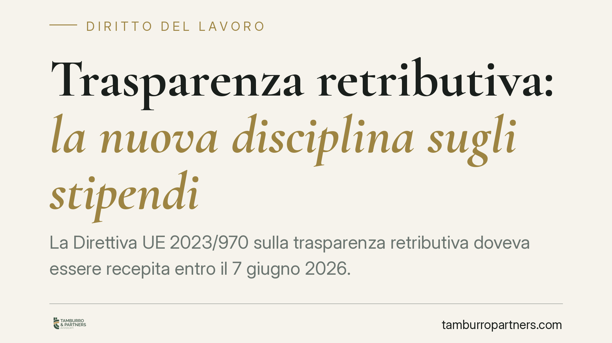

Trasparenza retributiva: la nuova disciplina sugli stipendi
La Direttiva UE 2023/970 sulla trasparenza retributiva doveva essere recepita entro il 7 giugno 2026. Il provvedimento nazionale introduce obblighi informativi su stipendi, il concetto di lavoro di pari valore e nuovi diritti di accesso per lavoratori e candidati. Per le imprese si aprono adempimenti organizzativi rilevanti, con effetti diretti anche sul contenzioso in materia di parita salariale.

Il contesto
La parita retributiva tra uomo e donna non e una novita: l'articolo 37 della Costituzione la afferma da decenni e il Codice delle pari opportunita (D.lgs. 198/2006) la disciplina in dettaglio. Il problema, storicamente, non e stato il riconoscimento del diritto ma la sua concreta esigibilita. Senza informazioni sui livelli retributivi, un lavoratore raramente sa di essere pagato meno di un collega a parita di mansioni.
La Direttiva UE 2023/970 interviene proprio su questo nodo. Non crea un diritto nuovo: rende visibile e verificabile un diritto gia esistente, imponendo la trasparenza come strumento operativo. Il termine di recepimento fissato dalla Direttiva era il 7 giugno 2026. La normativa nazionale di attuazione (D.lgs. n. 96/2026, i cui estremi vanno confermati sulla Gazzetta Ufficiale) traspone questi principi nell'ordinamento italiano.
Inquadramento normativo
Due sono i pilastri della Direttiva. Il primo e il concetto di lavoro di pari valore: la parita retributiva non riguarda solo mansioni identiche, ma anche prestazioni diverse che presentano un valore equivalente sulla base di criteri oggettivi (competenze, sforzo, responsabilita, condizioni di lavoro). E un criterio piu ampio della semplice "stessa mansione".
Il secondo pilastro e la trasparenza informativa. La Direttiva prevede obblighi di comunicazione sul divario retributivo di genere (gender pay gap) articolati per soglie dimensionali - indicativamente 250, 150 e 100 dipendenti, con scadenze differenziate - da verificare nella trasposizione nazionale. Quando il divario supera il 5% in una categoria di lavoratori e non e giustificato da fattori oggettivi, scatta l'obbligo di una valutazione retributiva congiunta con i rappresentanti dei lavoratori. Anche questa soglia va confrontata con il testo attuativo definitivo.
Particolarmente incisiva e l'inversione dell'onere della prova: nelle controversie sulla parita retributiva spettera al datore di lavoro dimostrare l'assenza di discriminazione, non al lavoratore provarla. Un ribaltamento che sposta in modo significativo l'equilibrio processuale.
Il raccordo con il sistema italiano
La vera sfida applicativa sara il coordinamento con la contrattazione collettiva. I CCNL definiscono inquadramenti e livelli retributivi: il criterio del "lavoro di pari valore" potrebbe entrare in tensione con classificazioni contrattuali costruite su logiche diverse. Occorrera capire in che misura l'appartenenza a un dato livello CCNL basti a giustificare una differenza retributiva.
Va poi considerato il ruolo della consigliera di parita e degli strumenti gia previsti dal Codice delle pari opportunita, come il rapporto biennale sulla situazione del personale (art. 46 D.lgs. 198/2006). Il rischio e una duplicazione di adempimenti: sara opportuno che il legislatore nazionale integri i nuovi obblighi europei con quelli esistenti, evitando sovrapposizioni.
Implicazioni pratiche
Per i candidati cambia la fase di selezione: il datore non potra chiedere la storia retributiva pregressa e dovra fornire informazioni sul livello retributivo iniziale o sulla forbice prevista, gia nell'annuncio o prima del colloquio.
Per i lavoratori in forza nasce un diritto di accesso: potranno richiedere i dati sui livelli retributivi medi, disaggregati per genere, relativi alla propria categoria. Uno strumento che rende concretamente contestabile una disparita.
Per le imprese l'impatto e organizzativo prima ancora che giuridico. Servono sistemi di classificazione delle mansioni basati su criteri oggettivi e neutri rispetto al genere, oltre a procedure per la raccolta e la comunicazione dei dati retributivi.
Cosa fare in concreto
- Mappare le mansioni aziendali secondo criteri oggettivi (competenze, responsabilita, condizioni) per poter individuare eventuali situazioni di "pari valore".
- Analizzare internamente il divario retributivo di genere per categoria, verificando se e dove si superi la soglia rilevante.
- Rivedere le procedure di selezione, eliminando la richiesta di informazioni sulla retribuzione precedente e predisponendo l'informativa sui livelli iniziali.
- Documentare le ragioni oggettive di ogni differenza retributiva, in vista dell'inversione dell'onere della prova.
- Coordinare i nuovi adempimenti con il rapporto biennale e con il ruolo della rappresentanza sindacale, evitando duplicazioni.
E opportuno avviare per tempo questa attivita: gli obblighi di trasparenza richiedono un lavoro preparatorio che non si improvvisa alla scadenza.
Disclaimer
Contributo informativo a cura di Tamburro & Partners Avvocati. Non costituisce parere legale.
Ogni storia di lavoro ha i suoi tempi.
Se gestisci HR e vuoi un confronto su contenzioso, ispezioni o licenziamenti, scrivi allo studio. Ti rispondiamo entro un giorno lavorativo.